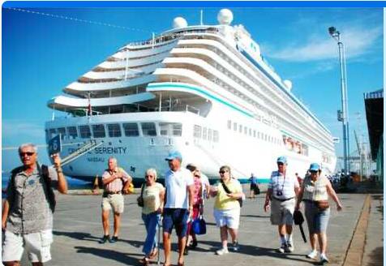
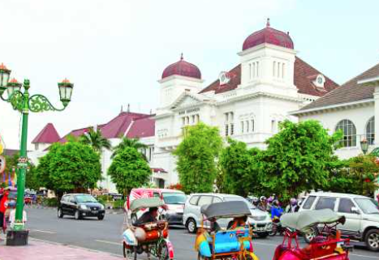
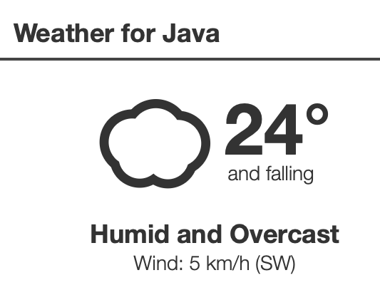

“How I wish that somewhere there existed an island for those who are wise and of good will.”
– Albert Einstein
Colours of Java: Events and Festivals
A professional experienced guide will be waiting to greet you at the arrival gates. They will be holding a sign
with your name on it for ease of contact. Sit back, relax, and enjoy the sights as your driver negotiates the
journey from Semarang to Borobudur.

Have a typical local lunch before the return journey to the port.
Semarang & Yogyakarta: One Way Private Transfer

Sit back, relax, and enjoy the sights on a three and a half hour journey as your driver negotiates the traffic.
Take the chance to stop for pictures or coffee on your private transfer. This service is limited to three guests
per group.
For pick up from the airport, your professional driver will be waiting to greet you at the arrival gates. They
will be holding a sign with your name for ease of contact.
Weather Forecast
The average highest temperature in Java in April is 32.1 ℃ (89.78 ℉). The average lowest temperature is 25.9 ℃
(78.62 ℉). At the beginning of April you can expect lower temperatures, the average highest temperature is
around 31.55 ℃ (88.79 ℉).

Jakarta Post: Indonesia Could Reopen Bali Beaches to Foreigners by End of July
Indonesia aims to welcome back foreign tourists to the resort islands of Bali, Bintan and Batam by the end of July, with a plan to speed up vaccinations in those areas to halt the spread of the novel coronavirus. The government is in talks with Singapore, China, South Korea, India, the Netherlands and United Arab Emirates for potential travel bubbles that will allow their nationals to visit Indonesia’s so-called “green zones,” or sites that have curbed Covid-19 infections and vaccinated a significant portion of their local population, Tourism and Creative Economy Minister Sandiaga Uno said in an interview on Friday.